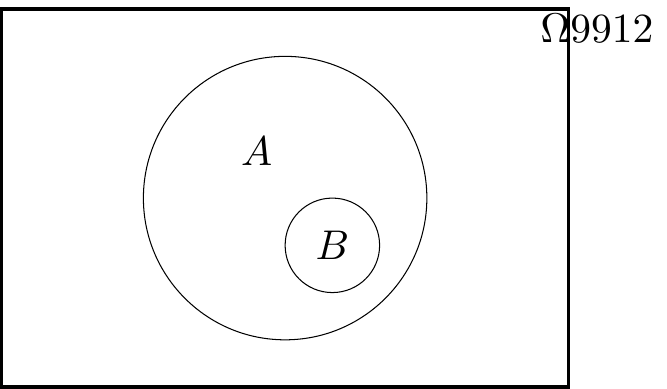

Problem Sheet 1

Solutions are now available to all non-assessed questions.
This is Problem Sheet 1, which covers material from Lectures 1 and 2 of the notes. You should work through all the questions on this problem sheet in advance of your tutorial in Week 2. Questions C1 and C2 are assessed questions, and are due in by 2pm on Monday 16 October. I recommend spending about 4 hours on this problem sheet, plus 1 extra hour to neatly write up and submit your answers to the assessed questions.
A: Short questions
The first three questions are short questions, which are intended to be mostly not too difficult. Short questions usually follow directly from the material in the lectures. Here, you should clearly state your final answer, and give enough working-out (or a short written explanation) for it to be clear how you reached that answer. You can check your answers with the solutions-without-working at the bottom of this sheet; solutions-with-working will be available after Friday 13 October. If you get stuck on any of these questions, you might want to ask for guidance in your tutorial.
A1. Consider again the “number of Skittles in each packet” data from Example 1.1. \[ 59, \ 59, \ 59, \ 59, \ 60, \ 60, \ 60, \ 61, \ 62, \ 62, \ 62, \ 63, \ 63 .\]
(a) Calculate the mean number of Skittles in each packet.
Solution. This was in the notes: \[ \bar x = \frac{1}{13} (59 + 59 + \cdots + 63) = \frac{789}{13} = 60.6923\dots \approx 60.7 .\]
(b) Calculate the sample variance using the definitional formula.
Solution. \[\begin{align*} s_x^2 &= \frac{1}{13 - 1} \left( (59 - 60.7)^2 + (59 - 60.7)^2 + \cdots + (63 - 60.7)^2 \right) \\ &= \frac{1}{12} (2.86 + 2.86 + \cdots + 5.33) \\ &= \frac{1}{12} \times 28.77 \\ &= 2.40 \end{align*}\]
(c) Calculate the sample variance using the computational formula.
Solution. \[\begin{align*} s_x^2 &= \frac{1}{13 - 1} \left( (59^2 + 59^2 + \cdots + 63^2) - 13 \times 60.6923^2)\right) \\ &= \frac{1}{12} (47915 - 47886.2) \\ &= 2.40 \end{align*}\]
Group feedback: With the computational formula, the value \(\sum_i x_i^2 - n \bar{x}^2\) is typically a fairly small number given as the difference between two very big numbers \(\sum_i x_i^2\) and \(n \bar x^2\). This means you have to get the two big numbers very precise, to ensure the cancellation happens correctly; in particular, make sure you use plenty of decimal places of accuracy in \(\bar x\).
(d) Out of (b) and (c), which calculation did you find easier, and why?
Solution. The computational formula required fewer presses of the calculator buttons, because \(\sum_i x_i^2\) is fewer button-presses than \(\sum_i (x_i - \bar x)^2\), where you have to subtract the means before squaring.
On the other hand, the expression inside the brackets of the computational formula is a fairly small number given as the difference of two very large numbers, so it was necessary to use lots of decimal places of accuracy in \(\bar x\) to make sure the second large number was accurate and therefore that the subtraction cancelled correctly.
Group feedback: Many different answers for (d) are fine provided you give a justification.
A2. Consider the following data sets of the age of elected politicians on a local council. (The “18–30” bin, for example, means from one’s 18th birthday to the moment before one’s 30th birthday, so lasts 12 years.)
| Age (years) | Frequency | Relative frequency | Frequency density |
|---|---|---|---|
| 18–30 | 1 | ||
| 30–40 | 2 | ||
| 40–45 | 4 | ||
| 45–50 | 5 | ||
| 50–60 | 6 | ||
| 60–80 | 2 | ||
| Total | 20 | 1 | — |
(a) Complete the table by filling in the relative frequency and frequency densities.
Solution.
| Age (years) | Frequency | Relative frequency | Frequency density |
|---|---|---|---|
| 18–30 | 1 | 0.05 | 0.0042 |
| 30–40 | 2 | 0.1 | 0.01 |
| 40–45 | 4 | 0.2 | 0.04 |
| 45–50 | 5 | 0.25 | 0.05 |
| 50–60 | 6 | 0.3 | 0.03 |
| 60–80 | 2 | 0.1 | 0.005 |
| Total | 20 | 1 | — |
(b) What is the median age bin?
Solution. The 10th- and 11th-largest observations are both in the 45–50 bin, which is therefore the median bin.
(c) What is the modal age bin?
Solution. The bin with the largest frequency density is 45–50, which is therefore the modal bin.
Group feedback: Remember that the modal bin is the one with the largest frequency density, not necessarily the bin with the highest frequency.
(d) Calculate (the standard approximation of) the mean age of the politicians.
Solution. Pretending that each person is in the centre of their bin, we have \[ \bar x = \frac{1}{20} (1\times24 + 2\times 35 + \cdots + 2 \times 65) = \frac{971.9}{20} = 48.6 . \]
A3. Consider the two datasets illustrated by the boxplots below. Write down some differences between the two datasets.
Solution. Some answers could be:
- The median and inter-quartile range of Dataset 2 appear to be very slightly larger than those in Dataset 1, although the differences are very small and might not be important in real life.
- Dataset 2 has a few outliers; Dataset 1 has none.
- While Dataset 1 is fairly “balanced” either side of the median, Dataset 2 shows what statisticians call a “positive skew”: the data above the median is much more spread out than the data below the median.
Group feedback: You can probably think of other answers.
B: Long questions
The next four questions are long questions, which are intended to be harder. Long questions often require you to think originally for yourself, not just directly follow procedures from the notes. You may not be able to solve all of these questions, although you should make multiple attempts to do so. Here, your answers should be written in complete sentences, and you should carefully explain in words each step of your working. Your answers to these questions – not only their mathematical content, but also how to write good, clear solutions – are likely to be the main topic for discussion in your tutorial. Solutions will be available after Friday 13 October.
B1. In a survey of 100 people, 40 liked tea, 35 liked coffee, and 15 liked both tea and coffee. By drawing a Venn diagram, or otherwise, find the probability that a person chosen at random:
(a) Likes only tea.
Solution. Using the notation \(| \cdot |\) to denote the number of people, we have \[ |\text{Likes only tea}| = |\text{Likes tea}| - |\text{Likes tea and coffee}| = 40-15 = 25. \] Therefore \[ \mathbb P(\text{Likes only tea}) = \frac{25}{100} = 0.25 \]
(b) Likes neither tea nor coffee.
Solution. \[ |\text{Likes tea or coffee}| = |\text{Likes only tea}| + |\text{Likes coffee}| = 25+35 = 60. \] Therefore \(100-60=40\) people like neither tea nor coffee, so \[\begin{align*} \mathbb P(\text{Likes neither}) = \frac{40}{100} = 0.4 \end{align*}\]
(c) Likes tea given that they like coffee.
Solution. \[ \mathbb P(\text{Likes Tea | Likes Coffee}) = \frac{\mathbb P(\text{Likes Tea and Coffee})}{\mathbb P(\text{Likes Coffee})} = \frac{15}{35} = 0.4286 \]
B2. A factory produces 80% of its goods in Factory A and 20% in Factory B. The probability of a defective item from Factory A is 0.05, and from Factory B, it is 0.1.
(a) Draw a tree diagram representing this situation.
Solution.
(b) Calculate the probability that a randomly selected item is defective.
Solution. By multiplying the probabilities along the branches of the tree and adding the probabilities: \[\begin{align*} \mathbb P(\text{Defective}) &= 0.8 \times 0.05 + 0.2 \times 0.1 \\ &= 0.04 + 0.02 = 0.06 \end{align*}\]
B3. A magician has prepared two piles of cards taken from a standard deck of cards. In the first pile he has put the 3, 4 and 5 of hearts; in the second pile he has the 2 of spades and a second numbered spade, which we denote as \(x\). A member of the audience is invited to pick one card at random from each pack and multiply the two numbers together.
(a) Draw a sample space diagram giving all possible products (in terms of \(x\)).
Solution.
| \(\spadesuit \setminus \heartsuit\) | \(\mathbf 3\) | \(\mathbf 6\) | \(\mathbf 7\) |
|---|---|---|---|
| \(\mathbf 2\) | \(6\) | \(12\) | \(14\) |
| \(x\) | \(3x\) | \(6x\) | \(7x\) |
(b) Calculate the probability that the product is even in the two cases that (i) \(x\) is odd and (ii) \(x\) is even.
Solution. (i) If \(x\) is odd, then 4 of the 6 products in the sample space are even, namely 6, 12, 14 and \(6x\). Therefore \[ \mathbb P (\text {Even product}) = \frac{4}{6} = \frac{2}{3}. \] (ii) If \(x\) is even, then all 6 products in the sample space are even. Therefore \[ \mathbb P (\text {Even product}) = \frac{6}{6} = 1. \]
(c) The magician knows that the probability that the product is even is equal to the probability that the product is greater than 10. Find the value of \(x\).
Solution. Since 6 is a possible product, \[ \mathbb P (\text{Product} > 10) \neq 1. \] Therefore, using the results from (b), \(x\) must be an odd number and \[ \mathbb P (\text{Product} > 10) = \frac{2}{3}. \] This means that exactly two out of \(3x,\) \(6x\) and \(7x\) must be greater than 10. If \(x \geq 4\), then all three values would be greater than 10, and if \(x \leq 1\) then only one would be. Therefore the only possible values of \(x\) are 2 and 3. The two spade cards must be different to each other, so \(x=3\).
C: Assessed questions
The last two questions are assessed questions. This means you will submit your answers, and your answers will be marked by your tutor. These two questions count for 3% of your final mark for this module. If you get stuck, your tutor may be willing to give you a small hint in your tutorial.
The deadline for submitting your solutions is 2pm on Monday 16 October at the beginning of Week 3. Submission will be via Gradescope, which you can access via Minerva or on the Gradescope mobile app. You should submit your answers as a single PDF file. Most students choose to hand-write their work on paper, then scan-and-submit it to using the Gradescope mobile app. Your work will be marked by your tutor and returned on Monday 23 October, when solutions will also be made available.
Question C1 is a “short question”, where brief explanations or working are sufficient; Question C2 is a “long question”, where the marks are not only for mathematical accuracy but also for the clarity and completeness of your explanatory writing.
You should not collaborate with others on the assessed questions: your answers must represent solely your own work. The University’s rules on academic integrity – and the related punishments for violating them – apply to your work on the assessed questions.
C1. The monthly average exchange rate for US dollars into British pounds over a 12-month period was: \[\begin{gather*} 1.306, \ 1.301, \ 1.290, \ 1.266, \ 1.268, \ 1.302,\\ 1.317, \ 1.304, \ 1.284, \ 1.268, \ 1.247, \ 1.215. \end{gather*}\]
(a) Calculate the median for this data.
(b) Calculate the mean for this data.
(c) Calculate the sample variance for this data.
Hints. Have you checked the definitions of these statistics from Subsection 1.3 of the notes?
(d) Is the mode an appropriate summary statistic for this sort of data? Why/why not?
Hint. Is there a unique mode for this data? Why/why not? For what sort of data does the “mode” give us useful answers?
C2. (a) Suppose that a dataset \(\mathbf x = (x_1, x_2, \dots, x_n)\) (with \(n \geq 2\)) has sample variance \(s_x^2 = 0\). Show that all the datapoints are in fact equal.
Hint. I recommend starting with the definitional formula.
When is the square of something equal to 0? What can you say about the value of a square when it’s nonzero? What can you say about a “sum of squares” – that is, some numbers squared then added together?
(b) Prove the following computational formula for the sample covariance: \[ s_{xy} = \frac{1}{n-1} \left( \sum_{i=1}^n x_iy_i - n\bar x \bar y \right). \]
Hint. In Subsection 1.4 of the notes, we went from the definitional formula for the sample variance to a computational formula. Can you follow a similar argument here?